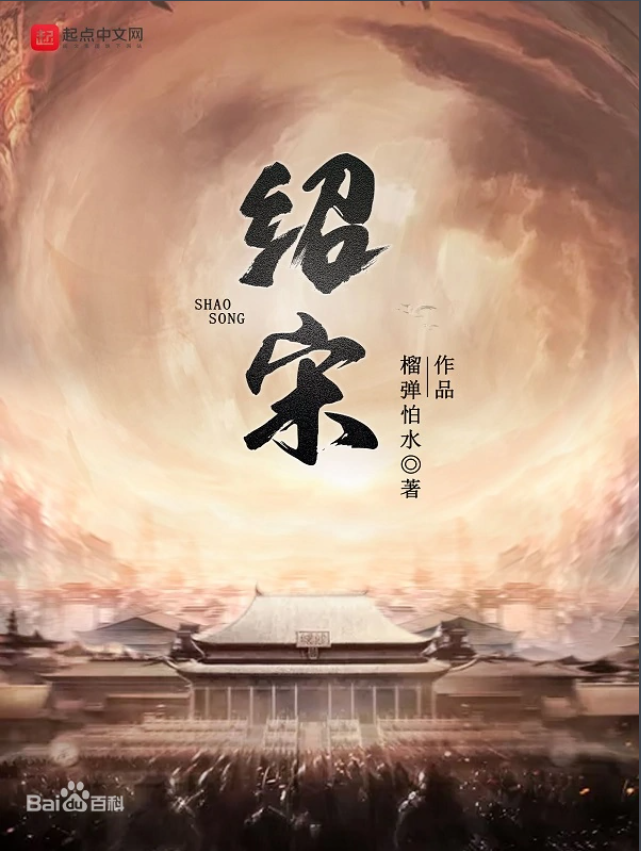

绍者，一曰继；二曰导。
公元1127年，北宋灭亡。旋即，皇九子赵构在万众期待中于商丘登基，继承宋统，改元建炎。
然而，三个月内，李纲罢相，陈东被杀，岳飞被驱逐出军，宗泽被遗弃东京，河北抗金布置被全面裁撤……经过这么多努力之后，满朝文武终于统一了思想，定下了拥护赵官家南下淮甸转扬州的辉煌抗金路线。
不过刚一启程，在鹿邑明道宫参拜了道祖之后，这位赵官家便一头栽入了闻名天下的九龙井中，起来后就不认得自己心腹是谁了！
朕要抗金！可朕的心腹都在何处？！
这是一个来自于九百年后灵魂的真诚呐喊，他在无可奈何继承了大宋的名号后，更要将这个朝廷与天下导向一条新路。
故称绍宋。
